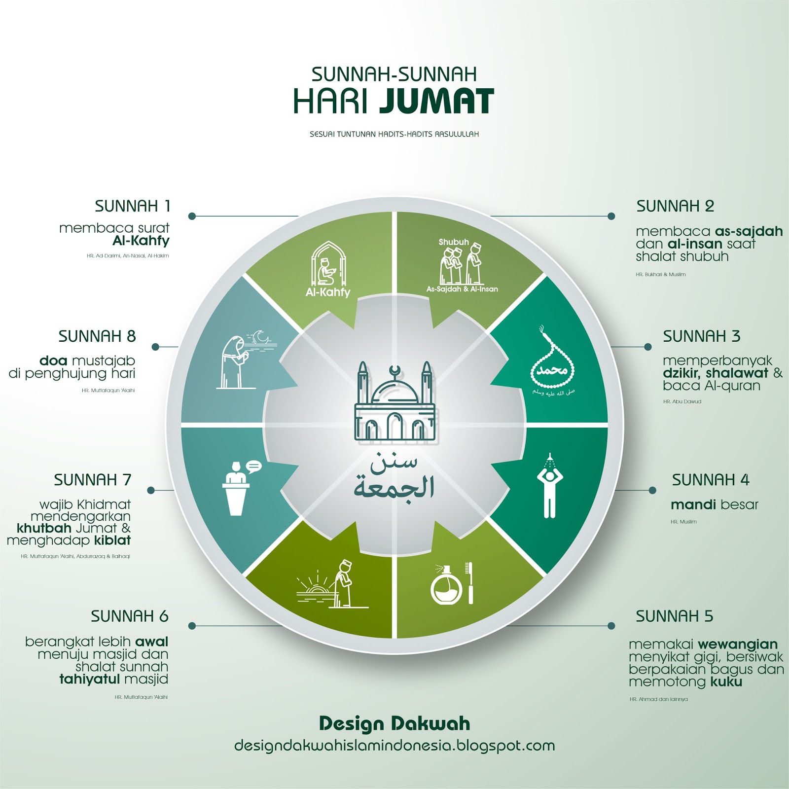
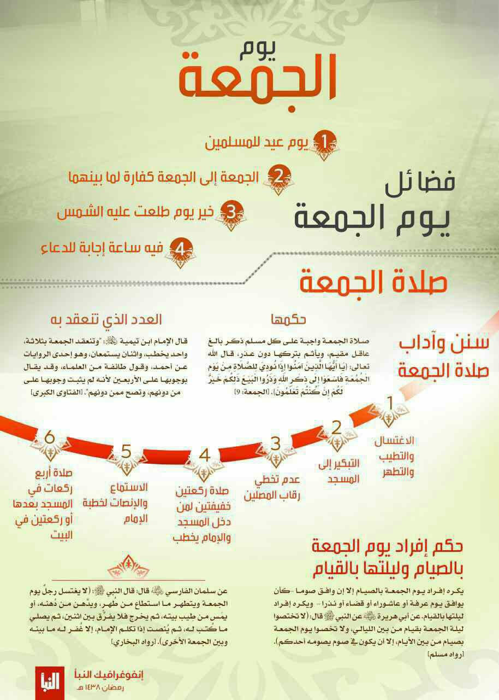

Sunnah dan Keutamaan Hari Jum'at
Sunnah-Sunnah di hari jum’at :

Banyak pahala kebaikan yang bisa kawan perolah di hari Jum’at. Berikut ini beberapa amalan istimewa di hari Jum’at:
-
Membaca surat al-Kahfi pada malam Jum’at. Dibolehkan membacanya di siang hari bila tidak sempat membacanya di malam hari (HR. Ad-Darimi, An-Nasa’i, Al Hakim).
-
Membaca surat As-Sajdah dan surat Al-Insan dengan sempurna pada dua rakaat shalat Shubuh (HR. Bukhari dan Muslim dan yang lainnya).
-
Memperbanyak shalawat kepada Nabi shallallahu alaihi wasallam. (HR. Abu Dawud) demikian juga disunnahkan memperbanyak dzikir maupun membaca Al-Qur’an.
-
Dianjurkan mandi besar sebelum berangkat shalat Jum’at (HR. Muslim).
-
Memakai wewangian, bersiwak atau menggosok gigi, serta mengenakan pakaian yang paling baik. (HR. Ahmad) Disunnahkan pula memotong kuku dan rambut.
-
Berangkat lebih awal menuju masjid. (HR. Muttafaqun ‘alaih). Saat sahabat masuk masjid disunnahkan mengerjakan shalat dua rakaat terlebih dahulu sebelum duduk mendengarkan khutbah. Hal ini berlaku sekalipun khutbah sedang berlangsung. (HR. Muslim).
-
Wajib mendengarkan khutbah dengan khidmat. Bagi sahabat yang sibuk sendiri dengan bermain-main HP atau bercakap-cakap dengan teman pada saat khutbah sedang berlangsung, maka jum’atnya sia-sia. (Muttafaqun ‘Alaih).
-
Doa mustajab di penghujung hari Jum’at/menjelang Maghrib. (Muttafaqun ‘Alaih).
Keutamaan-keutamaan di hari jum’at :

Keutaman Hari Jum’at
1. Hari Jum’at adalah Hari Rayanya orang Islam
2. Menghapus Dosa antara satu Jum’at ke Jum’at berikutnya
3. Sebaik-baik hari yang terbit padanya matahari
4. Pada hari Jum’at ada waktu terkabulnya Doa
Sumber :